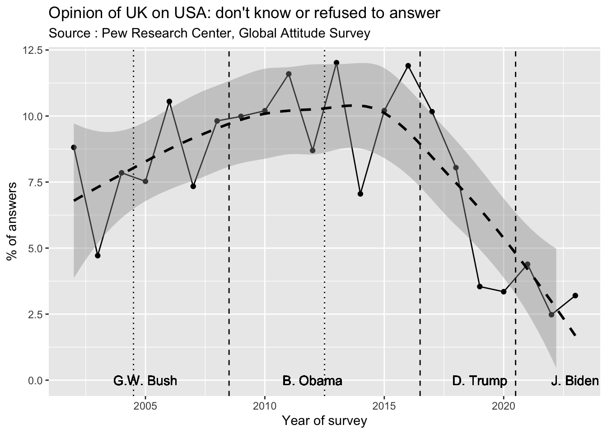
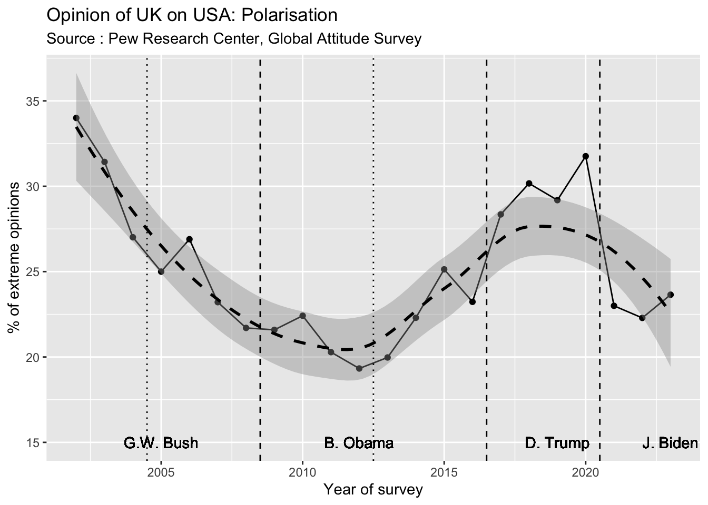
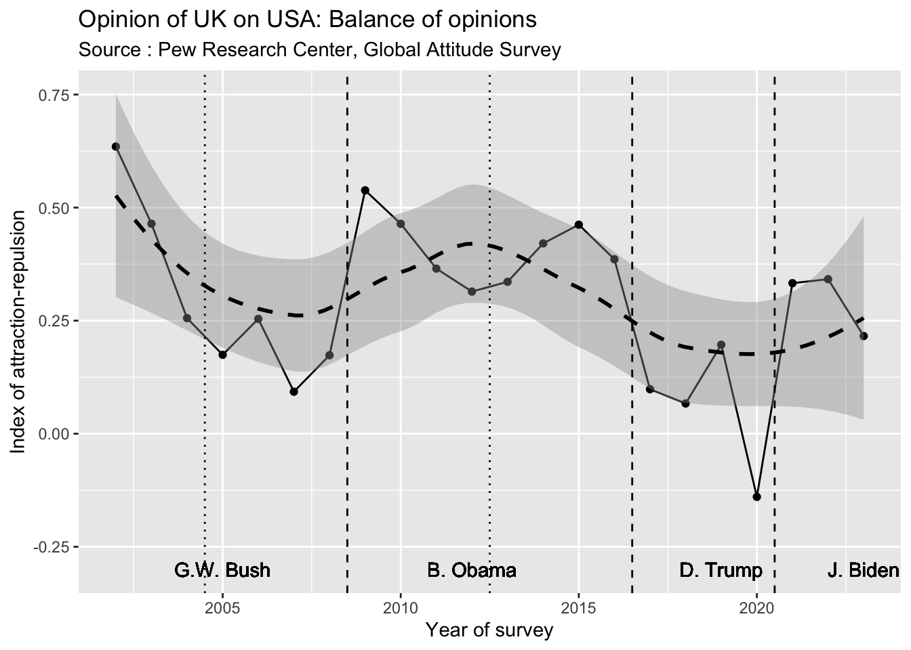
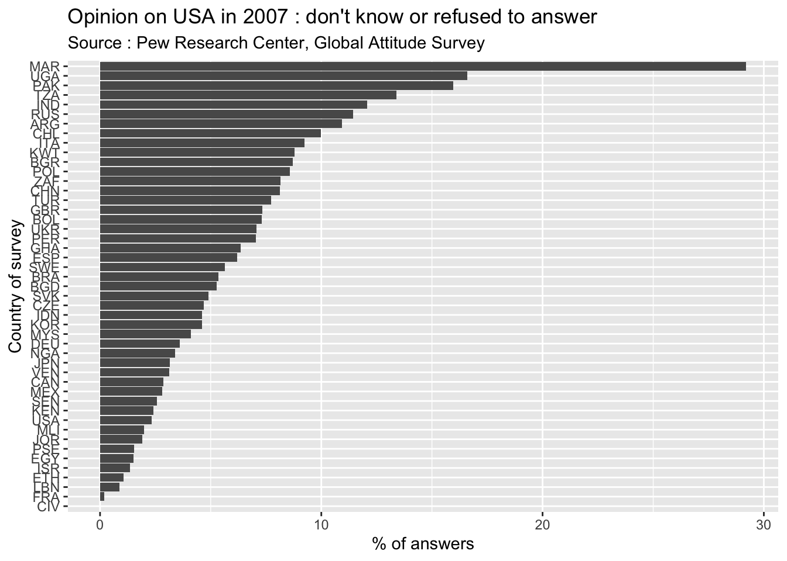
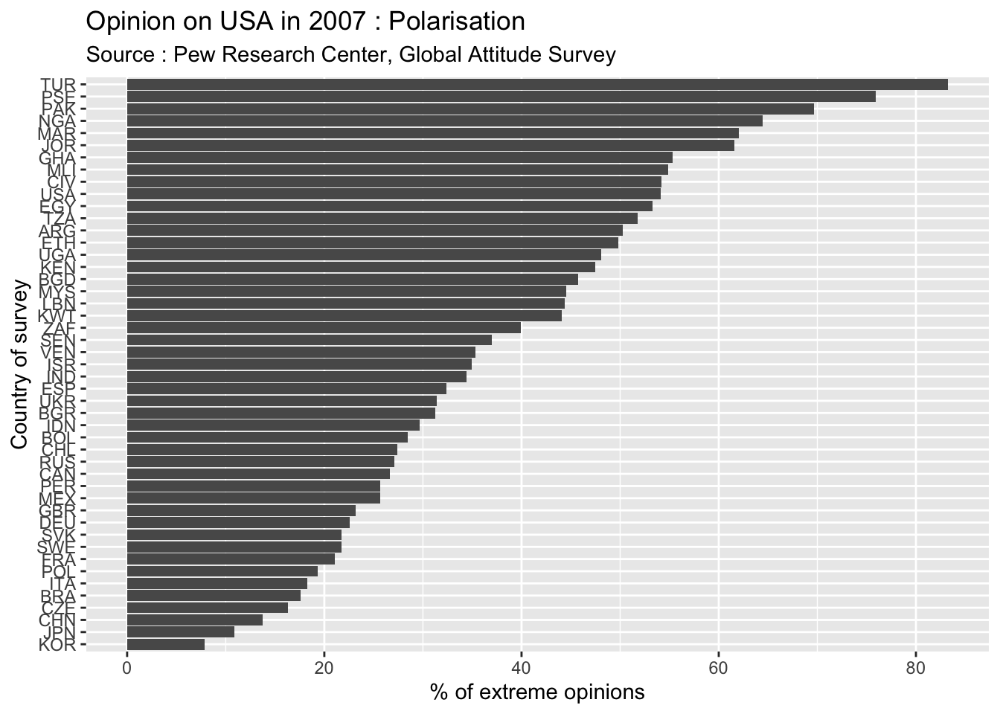
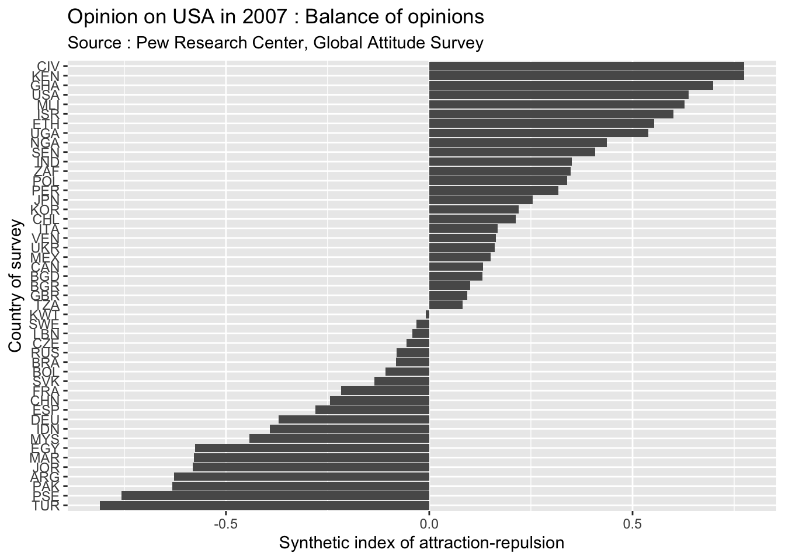

Attaching package: 'reshape2'The following object is masked from 'package:tidyr':
smithsLinking to GEOS 3.11.0, GDAL 3.5.3, PROJ 9.1.0; sf_use_s2() is TRUE
Attaching package: 'reshape2'The following object is masked from 'package:tidyr':
smithsLinking to GEOS 3.11.0, GDAL 3.5.3, PROJ 9.1.0; sf_use_s2() is TRUEWe have presented in a previous post the database that we have elaborated on the basis of the Global Attitude Survey in order to follow the evolution of world opinion about the three major powers that are USA, China and Russia.
Before to develop more sophisticated analysis on polarisation, we will try here to propose simple explorations of data in order to check the quality and shortcomings of the data.
We remind briefly the structure of the database of 617345 observation and 18 variables.
| wav | sta | wgt | sex | age | opi_rel | opi_USA | opi_CHN | opi_RUS | opi_UN | opi_EU | opi_IRN | opi_DEU | opi_FRA | opi_JPN | opi_IND | opi_TWN | opi_BRA | |
|---|---|---|---|---|---|---|---|---|---|---|---|---|---|---|---|---|---|---|
| 617342 | 2023 | ZAF | 1.0502763 | Male | 24 | Somewhat important | Somewhat favorable | Very favorable | Somewhat favorable | Somewhat favorable | Somewhat favorable | NA | NA | NA | NA | Somewhat favorable | Somewhat favorable | NA |
| 617343 | 2023 | ZAF | 0.3254254 | Male | 39 | Very important | Very unfavorable | Very unfavorable | Very unfavorable | Very unfavorable | Very unfavorable | NA | NA | NA | NA | Very unfavorable | DK | NA |
| 617344 | 2023 | ZAF | 2.4937630 | Male | 28 | Very important | DK | Very unfavorable | Very unfavorable | DK | Very unfavorable | NA | NA | NA | NA | Somewhat favorable | DK | NA |
| 617345 | 2023 | ZAF | 0.7725435 | Female | 24 | Very important | Somewhat favorable | Somewhat favorable | Somewhat favorable | Somewhat favorable | Somewhat favorable | NA | NA | NA | NA | Somewhat favorable | Somewhat favorable | NA |
Let’s take a example the evolution of the evolution of the opinion of inhabitants of one country about another. We will use the case of the opinion of UK citizens on USA as it is one case where the survey has been realized every year from 2002 to 2023. In the majority of case, we don’t have complete time series.
wav wgt sex age
Min. :2002 Min. :0.05043 Female: 9707 Min. :18.00
1st Qu.:2009 1st Qu.:0.60548 Male :10161 1st Qu.:36.00
Median :2014 Median :0.94839 Median :52.00
Mean :2014 Mean :1.00422 Mean :50.97
3rd Qu.:2019 3rd Qu.:1.11110 3rd Qu.:65.00
Max. :2023 Max. :5.70402 Max. :97.00
opi
Very favorable :2455
Somewhat favorable :9061
Somewhat unfavorable:4735
Very unfavorable :2092
DK :1429
Refused : 96 | wav | wgt | sex | age | opi |
|---|---|---|---|---|
| 2002 | 0.893 | Male | 39 | Somewhat favorable |
| 2002 | 1.039 | Male | 23 | Somewhat unfavorable |
| 2002 | 0.893 | Male | 35 | Somewhat unfavorable |
| 2002 | 0.956 | Female | 59 | Very favorable |
| 2002 | 1.094 | Female | 22 | Somewhat favorable |
| 2002 | 0.955 | Male | 41 | Somewhat favorable |
Keeping all modalities of answer, we can create a weighted table of answers with as many lines as wawes of wurvey and as many columns as possibilities of choices.
| wav | Very favorable | Somewhat favorable | Somewhat unfavorable | Very unfavorable | DK | Refused |
|---|---|---|---|---|---|---|
| 2002 | 134 | 239 | 62 | 21 | 41 | 3 |
| 2003 | 90 | 258 | 68 | 59 | 24 | 0 |
| 2004 | 75 | 214 | 122 | 49 | 39 | 0 |
| 2005 | 90 | 314 | 202 | 82 | 55 | 1 |
| 2006 | 98 | 403 | 181 | 117 | 94 | 0 |
| 2007 | 87 | 410 | 288 | 124 | 66 | 6 |
| 2008 | 56 | 335 | 187 | 88 | 65 | 7 |
| 2009 | 95 | 418 | 105 | 49 | 71 | 3 |
| 2010 | 105 | 384 | 135 | 44 | 74 | 2 |
| 2011 | 116 | 483 | 217 | 62 | 109 | 6 |
| 2012 | 105 | 505 | 244 | 74 | 84 | 4 |
| 2013 | 100 | 484 | 215 | 75 | 111 | 8 |
| 2014 | 130 | 530 | 192 | 77 | 68 | 2 |
| 2015 | 152 | 474 | 167 | 63 | 91 | 6 |
| 2016 | 200 | 678 | 294 | 95 | 161 | 10 |
| 2017 | 135 | 371 | 289 | 126 | 95 | 9 |
| 2018 | 114 | 364 | 262 | 156 | 68 | 10 |
| 2019 | 164 | 410 | 269 | 116 | 34 | 1 |
| 2020 | 89 | 314 | 326 | 208 | 30 | 2 |
| 2021 | 113 | 517 | 211 | 104 | 39 | 5 |
| 2022 | 184 | 643 | 315 | 91 | 29 | 2 |
| 2023 | 130 | 458 | 281 | 99 | 26 | 6 |
We can easily transform the table in percentage for a better visualisation of the probability of opinion of each type :
| Very favorable | Somewhat favorable | Somewhat unfavorable | Very unfavorable | DK | Refused | |
|---|---|---|---|---|---|---|
| 2002 | 26.7 | 47.8 | 12.4 | 4.3 | 8.1 | 0.7 |
| 2003 | 18.1 | 51.7 | 13.6 | 11.9 | 4.7 | 0.0 |
| 2004 | 15.0 | 42.8 | 24.4 | 9.9 | 7.9 | 0.0 |
| 2005 | 12.1 | 42.2 | 27.2 | 11.0 | 7.4 | 0.1 |
| 2006 | 11.0 | 45.1 | 20.3 | 13.1 | 10.5 | 0.0 |
| 2007 | 8.8 | 41.8 | 29.4 | 12.7 | 6.7 | 0.6 |
| 2008 | 7.6 | 45.3 | 25.3 | 12.0 | 8.9 | 0.9 |
| 2009 | 12.8 | 56.4 | 14.2 | 6.6 | 9.6 | 0.4 |
| 2010 | 14.2 | 51.6 | 18.1 | 6.0 | 9.9 | 0.3 |
| 2011 | 11.7 | 48.7 | 21.8 | 6.2 | 11.0 | 0.6 |
| 2012 | 10.3 | 49.7 | 24.0 | 7.3 | 8.3 | 0.4 |
| 2013 | 10.0 | 48.7 | 21.7 | 7.5 | 11.2 | 0.8 |
| 2014 | 13.0 | 53.0 | 19.2 | 7.7 | 6.8 | 0.2 |
| 2015 | 16.0 | 49.7 | 17.5 | 6.6 | 9.5 | 0.7 |
| 2016 | 13.9 | 47.2 | 20.5 | 6.6 | 11.2 | 0.7 |
| 2017 | 13.2 | 36.2 | 28.2 | 12.3 | 9.3 | 0.9 |
| 2018 | 11.7 | 37.4 | 26.9 | 16.0 | 7.0 | 1.0 |
| 2019 | 16.5 | 41.2 | 27.1 | 11.6 | 3.4 | 0.1 |
| 2020 | 9.2 | 32.4 | 33.6 | 21.5 | 3.1 | 0.2 |
| 2021 | 11.4 | 52.3 | 21.3 | 10.5 | 3.9 | 0.5 |
| 2022 | 14.6 | 50.9 | 24.9 | 7.2 | 2.3 | 0.2 |
| 2023 | 13.0 | 45.8 | 28.1 | 9.9 | 2.6 | 0.6 |
We can now produce different time series according to our hypothesis on the phenomena under investigation.
We can firstly investigate the % of people that refused to answer or did not made a choice.

As we can see the evolution of this parameter is characterized by a slow increase of people without opinion between 2002 and 2016, between 8 and 10% of the sample. But after the election of D. Trump in 2017, the proportion of people without opinion declined dramatically to less than 5 % and the election of J. Biden did not modify the situation.
This first results are in line with another analysis related to the choice of extreme situation of the Likert scale. The figure below indicates the proportion of people that has chosen the answers “very favorable” or “very unfavorable”.

We notice here a high polarisation in 2002 (probably in relation with September 11 and the “war to terrorism” of G.W. Bush). But we reach the lowest level of polarisation in 2010-2014 during the presidency of B.Obama. The polarisation increase slowly during the second presidency of Obama and dramatically with the election of D. Trump. J. Biden election is characterized by a reduction of polarisation.
We use here the classical index of attraction-repulsion \(I\) to evaluate the balance of positive and negative opinion.
\(I = \frac{Favorable-Unfavorable}{Favorable+Unfavorable}\)

Finally we can produce the classical diagram of the sum of favorable opinion that reveals expected correlation with the different presidents of the US. But this figure is only one component of the analysis and the two previous one about opinion and polarisation are certainly as much important.
We can use a correspondance analysis in order to visualize the general trajectory of opinions (excluding answers of people that refused or did not answer). The advantage of this statisticial method is to provide a good picture of the period of change or stability of opinion and to identify the most important turning points.
[1] "data.frame"The Axis 1 (74% of inertia) is clearly associated to the opposition between favorable opinion (left) and unfavorable opinion (right). The Axis 2 is related to the degree of polarisation that can be higher (top) or lower (down).
The most extreme situations are observed in 2002 (very favorable opinion) and 2020 (very unfavorable opinion). They are both related to international events that has dramatically influenced the opinion of UK citizens on the US : sympathy in the case of the folow-up of septembr 11. attacks ; antipathy in the case of Trump présidence and covid crisis. These extreme points are generally not observed during a long period and we observe very strong distance between these years and the one located immediately before and after.
Looking at the most important distances between two years, we notice very important jumps in 2002-2003 (begining of the second war in Iraq), 2008-2009 (election of Obama), 2016-2017 (election of Trump) and 2020-2021 (election of Biden).
This results suggest that it is not obvious to evaluate the opinion of a country about USA if we don’t have several points of observation through time and, ideally, a complete view of the trajectory.
In this second exploration, we select several countries but only one wave of survey. We choose the year 2007 because it is the one for which we have the maximum of countries (47) and also because it is located just before the crise of subprimes that started in july 2007.
sta wgt sex age
CHN : 3141 Min. : 0.0100 Female:23028 Min. :18.00
IND : 2040 1st Qu.: 0.8655 Male :21965 1st Qu.:27.00
USA : 1999 Median : 1.0000 Median :38.00
PAK : 1975 Mean : 1.0003 Mean :40.47
UGA : 1116 3rd Qu.: 1.0033 3rd Qu.:51.00
NGA : 1092 Max. :18.7495 Max. :97.00
(Other):33630
opi
Very favorable : 6917
Somewhat favorable :14836
Somewhat unfavorable:11096
Very unfavorable : 9208
DK : 2664
Refused : 272
| sta | wgt | sex | age | opi |
|---|---|---|---|---|
| ARG | 0.8136704 | Female | 57 | DK |
| ARG | 0.8136704 | Male | 34 | Very unfavorable |
| ARG | 0.8136704 | Male | 34 | DK |
| ARG | 0.8136704 | Female | 67 | Very unfavorable |
| ARG | 0.8136704 | Female | 80 | Somewhat unfavorable |
| ARG | 0.8136704 | Female | 29 | Somewhat favorable |
Keeping all modalities of answer, we can create a weighted table of answers with as many lines as states of survey and as many columns as possibilities of choices.
| sta | Very favorable | Somewhat favorable | Somewhat unfavorable | Very unfavorable | DK | Refused |
|---|---|---|---|---|---|---|
| ARG | 26 | 107 | 248 | 332 | 76 | 12 |
| BGD | 170 | 359 | 148 | 258 | 48 | 4 |
| BGR | 61 | 186 | 122 | 80 | 39 | 4 |
| BOL | 65 | 280 | 273 | 155 | 51 | 10 |
| BRA | 38 | 396 | 384 | 128 | 50 | 3 |
| CAN | 114 | 426 | 274 | 140 | 24 | 4 |
| CHL | 110 | 327 | 196 | 88 | 66 | 14 |
| CHN | 78 | 1012 | 1477 | 318 | 244 | 12 |
| CIV | 363 | 265 | 59 | 21 | 0 | 0 |
| CZE | 45 | 358 | 357 | 94 | 28 | 14 |
| DEU | 23 | 281 | 466 | 195 | 29 | 7 |
| EGY | 68 | 141 | 319 | 457 | 13 | 2 |
| ESP | 10 | 159 | 158 | 142 | 29 | 2 |
| ETH | 293 | 252 | 100 | 57 | 6 | 2 |
| FRA | 47 | 345 | 446 | 164 | 1 | 1 |
| GBR | 87 | 410 | 288 | 124 | 66 | 6 |
| GHA | 318 | 244 | 52 | 48 | 44 | 1 |
| IDN | 36 | 251 | 415 | 245 | 45 | 1 |
| IND | 407 | 804 | 373 | 210 | 209 | 37 |
| ISR | 263 | 437 | 132 | 43 | 10 | 2 |
| ITA | 32 | 234 | 138 | 51 | 38 | 8 |
| JOR | 83 | 122 | 255 | 521 | 11 | 8 |
| JPN | 59 | 404 | 254 | 21 | 23 | 1 |
| KEN | 429 | 434 | 77 | 33 | 24 | 0 |
| KOR | 21 | 397 | 234 | 33 | 32 | 1 |
| KWT | 68 | 158 | 97 | 133 | 36 | 8 |
| LBN | 162 | 313 | 239 | 278 | 7 | 2 |
| MAR | 43 | 106 | 163 | 396 | 266 | 26 |
| MEX | 82 | 381 | 217 | 125 | 17 | 7 |
| MLI | 311 | 248 | 62 | 66 | 8 | 6 |
| MYS | 26 | 161 | 210 | 272 | 28 | 1 |
| NGA | 486 | 272 | 103 | 194 | 37 | 0 |
| PAK | 83 | 223 | 282 | 1076 | 313 | 4 |
| PER | 99 | 390 | 162 | 92 | 55 | 1 |
| POL | 61 | 248 | 124 | 28 | 40 | 3 |
| PSE | 30 | 63 | 121 | 551 | 12 | 0 |
| RUS | 78 | 326 | 314 | 160 | 104 | 10 |
| SEN | 181 | 299 | 131 | 71 | 13 | 5 |
| SVK | 31 | 339 | 330 | 155 | 38 | 6 |
| SWE | 88 | 367 | 368 | 116 | 53 | 3 |
| TUR | 17 | 68 | 82 | 729 | 74 | 1 |
| TZA | 143 | 186 | 107 | 172 | 86 | 8 |
| UGA | 326 | 390 | 93 | 121 | 183 | 2 |
| UKR | 48 | 222 | 97 | 98 | 31 | 4 |
| USA | 941 | 662 | 236 | 118 | 39 | 8 |
| VEN | 97 | 356 | 147 | 178 | 20 | 5 |
| ZAF | 215 | 404 | 148 | 152 | 79 | 2 |
We can easily transform the table in percentage for a better visualisation of the probability of opinion of each type :
| Very favorable | Somewhat favorable | Somewhat unfavorable | Very unfavorable | DK | Refused | |
|---|---|---|---|---|---|---|
| ARG | 3.3 | 13.3 | 31.0 | 41.5 | 9.5 | 1.5 |
| BGD | 17.2 | 36.4 | 15.0 | 26.1 | 4.9 | 0.4 |
| BGR | 12.3 | 37.9 | 24.9 | 16.2 | 8.0 | 0.7 |
| BOL | 7.8 | 33.6 | 32.7 | 18.6 | 6.1 | 1.2 |
| BRA | 3.8 | 39.6 | 38.4 | 12.8 | 5.0 | 0.3 |
| CAN | 11.6 | 43.4 | 27.9 | 14.3 | 2.4 | 0.4 |
| CHL | 13.7 | 40.9 | 24.5 | 11.0 | 8.2 | 1.8 |
| CHN | 2.5 | 32.2 | 47.0 | 10.1 | 7.8 | 0.4 |
| CIV | 51.3 | 37.5 | 8.3 | 2.9 | 0.0 | 0.0 |
| CZE | 5.0 | 40.0 | 39.8 | 10.5 | 3.1 | 1.6 |
| DEU | 2.3 | 28.1 | 46.6 | 19.5 | 2.9 | 0.7 |
| EGY | 6.8 | 14.1 | 31.9 | 45.7 | 1.3 | 0.2 |
| ESP | 2.0 | 31.8 | 31.6 | 28.4 | 5.8 | 0.4 |
| ETH | 41.3 | 35.5 | 14.2 | 8.0 | 0.8 | 0.3 |
| FRA | 4.7 | 34.4 | 44.4 | 16.3 | 0.1 | 0.1 |
| GBR | 8.8 | 41.8 | 29.4 | 12.7 | 6.7 | 0.6 |
| GHA | 45.0 | 34.5 | 7.4 | 6.8 | 6.2 | 0.1 |
| IDN | 3.7 | 25.3 | 41.8 | 24.6 | 4.5 | 0.1 |
| IND | 20.0 | 39.4 | 18.3 | 10.3 | 10.2 | 1.8 |
| ISR | 29.7 | 49.3 | 14.9 | 4.8 | 1.1 | 0.2 |
| ITA | 6.4 | 46.6 | 27.5 | 10.2 | 7.6 | 1.7 |
| JOR | 8.3 | 12.2 | 25.5 | 52.1 | 1.1 | 0.8 |
| JPN | 7.7 | 53.0 | 33.3 | 2.8 | 3.0 | 0.1 |
| KEN | 43.0 | 43.5 | 7.7 | 3.3 | 2.4 | 0.0 |
| KOR | 2.9 | 55.3 | 32.6 | 4.6 | 4.5 | 0.1 |
| KWT | 13.6 | 31.6 | 19.4 | 26.6 | 7.2 | 1.6 |
| LBN | 16.2 | 31.3 | 23.9 | 27.8 | 0.7 | 0.2 |
| MAR | 4.3 | 10.6 | 16.3 | 39.6 | 26.6 | 2.6 |
| MEX | 9.9 | 46.0 | 26.2 | 15.1 | 2.0 | 0.8 |
| MLI | 44.4 | 35.4 | 8.8 | 9.4 | 1.1 | 0.9 |
| MYS | 3.7 | 23.1 | 30.1 | 39.1 | 4.0 | 0.1 |
| NGA | 44.5 | 24.9 | 9.4 | 17.8 | 3.4 | 0.0 |
| PAK | 4.2 | 11.3 | 14.2 | 54.3 | 15.8 | 0.2 |
| PER | 12.4 | 48.8 | 20.3 | 11.5 | 6.9 | 0.2 |
| POL | 12.0 | 49.2 | 24.6 | 5.6 | 7.9 | 0.7 |
| PSE | 3.9 | 8.1 | 15.6 | 70.9 | 1.5 | 0.1 |
| RUS | 7.8 | 32.9 | 31.7 | 16.1 | 10.5 | 1.0 |
| SEN | 25.9 | 42.7 | 18.7 | 10.1 | 1.9 | 0.7 |
| SVK | 3.4 | 37.7 | 36.7 | 17.2 | 4.2 | 0.7 |
| SWE | 8.8 | 36.9 | 37.0 | 11.7 | 5.3 | 0.3 |
| TUR | 1.8 | 7.0 | 8.4 | 75.1 | 7.6 | 0.1 |
| TZA | 20.4 | 26.5 | 15.2 | 24.5 | 12.3 | 1.1 |
| UGA | 29.3 | 35.0 | 8.3 | 10.9 | 16.4 | 0.2 |
| UKR | 9.6 | 44.3 | 19.4 | 19.6 | 6.2 | 0.9 |
| USA | 47.0 | 33.0 | 11.8 | 5.9 | 1.9 | 0.4 |
| VEN | 12.1 | 44.3 | 18.3 | 22.2 | 2.5 | 0.6 |
| ZAF | 21.5 | 40.4 | 14.8 | 15.2 | 7.9 | 0.2 |
We can firstly investigate the % of people that refused to answer or did not made a choice.

As we can see on the figure, there is a great variability in the proportion of people that has formulated an opinion in the different countries where the survey has been realized. The countries where the maximum of people has refused to answer are Morocco (29%), Uganda (17%), Pakistan (16%) and Tanzania (13%). The reverse situation is observed in Côte d’Ivoire, France, and Lebanon where less than 1% of people did not formulated an opinion on USA.
We can then investigate the degree of polarisation, defined as the proportion of people that used the extreme values of the likert scale.

The most important levels of polarisation are observed in countries from Middle East characterized by very negative opinion of USA (Turkey, Palestiniant territories, Jordan, Pakistan, …) but also in countries from subsaharan Africa characterised by very positive opinion of USA (Nigeria, Côte d’ivoire, Mali, …). The countries with low level of polarisation are rather located in Asia (Korea, China, Japan, …), Europe (Czech republic, Italia, Poland, …) and Latin America (Brazil, Peru,…).
We use here the classical index of attraction-repulsion \(I\) to evaluate the balance of positive and negative opinion.
\(I = \frac{Favorable-Unfavorable}{Favorable+Unfavorable}\)

The index of attraction-repulsion is theoretically bounded between -1 (all opinions are unfavorable) and + 1 (all opinions are favorable) with an equilibrium around 0 (equal number of favorable and unfavorable opinions). In present case, we observe a very strong diversity of positions from -0.81 in Turkey to +0.77 in Ivory Coast. The countries are to some extent clustered in regions with very negative opinions in Middle east and very positive in subsaharan Africa. But they are exceptions and we should not conclude too quickly because it is possible that people has systematically provide positive or negative answers to foreign countries proposed to their evaluation. As we will see later, the absolute opinion on USA is less interesting than the comparison between USA and other countries of reference like Chinaor Russia.
We can use a correspondance analysis in order to visualize the positions of countries about USA. We will obtain by this method a map of the world opinion where distance between positions reveals differences in opinions.
The figure reveals clearly a “Guttman effect” which means that axis 1 and 2 should not be interprated separately but jointly. The countries are indeed distributed on a parabol that follow the order of opinions from the most unfavorable (topleft) to the moderate (bottom center) and the most favorable (topright).
But the countries are not regularly distributed along the parabol and we can easily identify clusters of countries sharing the same opinion on USA in 2007 : very unfavorable in arabic and muslim countries but also in Argentina ; very favorable in subsaharan Africa, Israel and USA ; moderate and equilibrated in other countries.
But this result is only a snapshot of the situation in 2007 and what we have to perform in next step is an analysis of the dynamic of positions of countries through time.